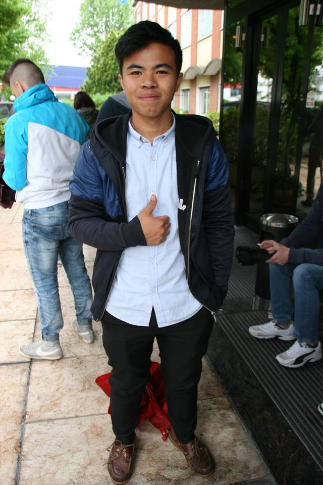

Opinioni

Mi chiamo Ayrton Vince Peralta della classe 3binfo della scuola CFP Galdus. Con la nostra scuola abbiamo effettuato questa gita scolastica presso l'azienda di nome STMICROELETRONICS situata presso la zona di Agrate Brianza(in culo ai lupi).Questa esperienza la ho trovata molto interessante e istruttiva, mi hanno affascinato molto le nuove tecnologie ad esempio gli Occhialini Virtuali(Orcam),Il mini proiettore etc. E' stato molto affascinante anche il loro laboratorio perchè dovevano indossare tutti il Bunny Suit e aveva macchine molto avanzate e costose.